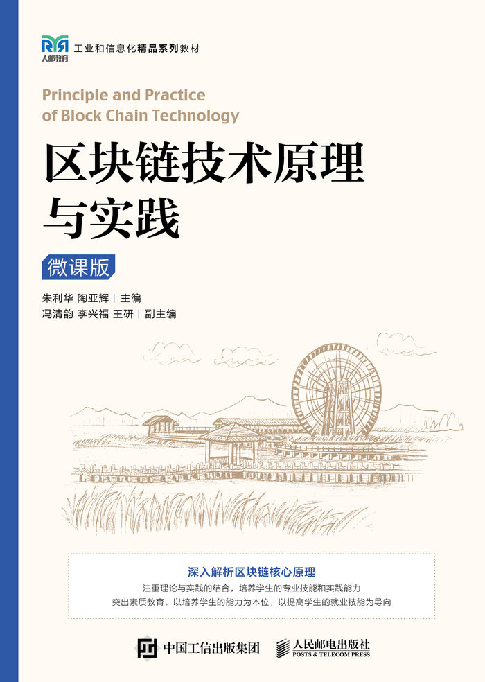

课程简介
本课程围绕区块链技术的基本原理、核心架构与应用场景展开， 面向管理学院学生的专业特点，重点强调区块链技术在组织管理、 业务流程优化和数据可信协同中的应用价值。
课程通过理论讲解与实验实践相结合的方式， 引导学生理解区块链技术如何服务于管理决策与业务创新， 提升其在数字化背景下分析问题与应用技术解决实际问题的能力。
课程概览
开课学期
2024–2025 学年 春季学期
授课对象
管2206-1、管2206-2（61人）
上课时间
每周二 第 5–6 节
上课地点
理论：二教308｜实验：一教510
总学时
32（理论 24｜实验 8）
考核方式
考勤 + 作业 + 实验 + 考试
授课教师
李艳婷 讲师
单位：石家庄铁道大学
研究方向：供应链管理、渠道配置、供应链韧性、区块链技术
课程目标
- 理解区块链技术的基本原理与核心概念，形成对区块链体系结构的整体认识。
- 结合真实案例，理解区块链技术在管理场景中的应用价值与实际作用。
- 通过模拟场景与实践操作，掌握区块链系统从需求分析到应用验证的基本流程。
- 提升运用区块链技术分析和解决实际管理问题的能力。
- 为后续专业学习和数字化管理实践奠定扎实的技术与应用基础。
课程安排
教学周次概览
| 周次 | 教学内容 | 类型 | 上课地点 |
|---|---|---|---|
| 第 1 周 | 第1章 区块链技术原理概述（概念、架构、分类、应用） | 理论 | 二教 308 |
| 第 2-3 周 | 第2章 区块链开发相关技术（数据格式/命令工具、Web服务、密码学基础） | 理论 | 二教 308 |
| 第 4 周 | 实验一：区块链开发环境搭建与相关程序实现 | 实验 | 一教 510 |
| 第 5 周 | 第3章 区块链的区块与账本（区块结构、账本） | 理论 | 二教 308 |
| 第 6-7 周 | 第4章 区块链的账户和交易（账户体系、交易与验证） | 理论 | 二教 308 |
| 第 8 周 | 实验二：Web 服务端与区块链账本系统的设计与实现 | 实验 | 一教 510 |
| 第 9–10 周 | 第5章 区块链中节点间的通信（网络模型、P2P、数据传播） | 理论 | 二教 308 |
| 第 11 周 | 第6章 区块链中的共识算法（一） | 理论 | 二教 308 |
| 第 12 周 | 实验三：区块链中账户、交易以及区块链系统的设计与实现 | 实验 | 一教 510 |
| 第 13 周 | 第6章 区块链中的共识算法（二） | 理论 | 二教 308 |
| 第 14 周 | 实验四：P2P 网络通信与区块链网络的设计与实现 | 实验 | 一教 510 |
| 第 15-16 周 | 第7章 区块链中的智能合约 | 理论 | 二教 308 |
课程考核方式
- 考勤（10%）
- 作业（10%）
- 实验（20%）
- 考试（60%）
参考教材

《区块链技术原理与实践（微课版）》
朱利华、陶亚辉 主编
展开查看教材简介
本书围绕区块链技术原理展开，系统讲解典型区块链架构的核心技术与关键知识点。 全书共分为八章，内容包括区块链技术原理概述、区块链开发相关技术、 区块链的区块与账本、账户与交易机制、节点间通信机制、 区块链共识算法、智能合约以及综合实训等。 教材采用“理论结合实践”的教学模式，在理论讲解的基础上配套程序设计与实训内容， 有助于学生在掌握理论知识的同时提升实际操作能力。